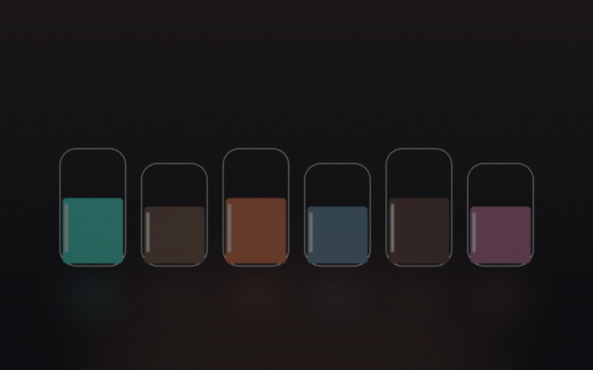

直觉型人格测评库
今天想认识哪个自己？
三个入口，凭第一直觉作答，认识你平常没有看见的自己。
20 道题 · 约 2 分钟
直觉型人格测评
隐藏人格画像
画出你下意识里最像自己的样子，看见你常被忽略的另一张脸。
开始探索
20 道题 · 约 2 分钟口感型人格测评
灵魂口感
用六种味道尝出你藏在日常里的情绪、节奏和关系偏好。
开始品尝 20 道题 · 约 5 分钟
20 道题 · 约 5 分钟
反向人格探测
反灵魂档案
不问你喜欢的，只测你逃避的，扫出那些你越不承认、越像你的部分。
开始扫描结果只是认识自己的入口，不是标签。